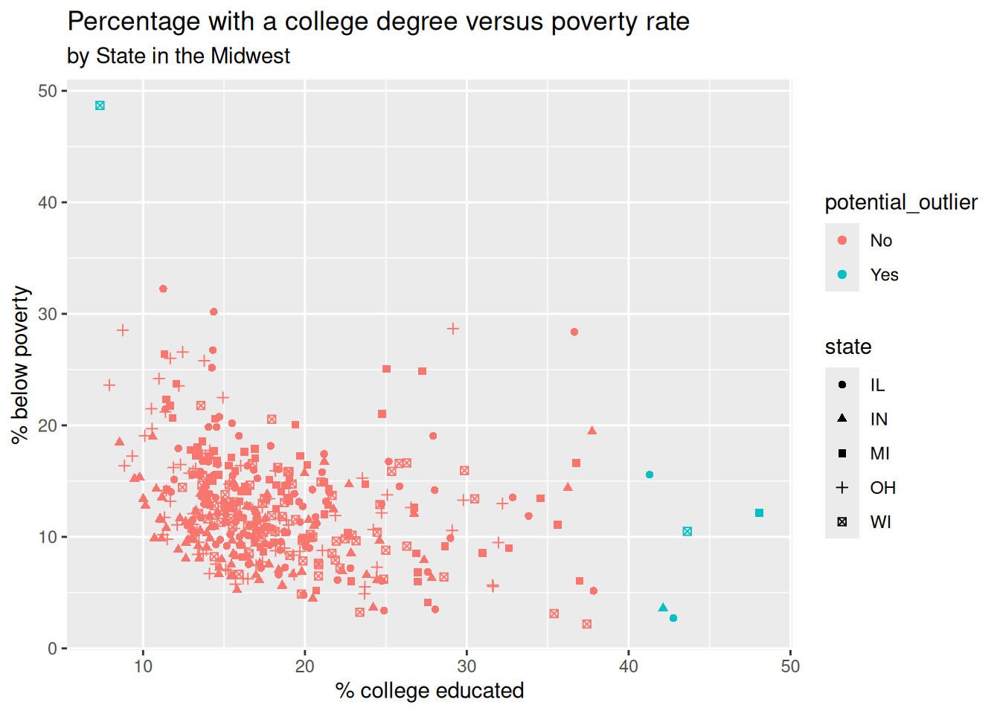

library(tidyverse)Lab 2 - Data wrangling
Questions
Part 1
?midwest
glimpse(midwest)Rows: 437
Columns: 28
$ PID <int> 561, 562, 563, 564, 565, 566, 567, 568, 569, 570,…
$ county <chr> "ADAMS", "ALEXANDER", "BOND", "BOONE", "BROWN", "…
$ state <chr> "IL", "IL", "IL", "IL", "IL", "IL", "IL", "IL", "…
$ area <dbl> 0.052, 0.014, 0.022, 0.017, 0.018, 0.050, 0.017, …
$ poptotal <int> 66090, 10626, 14991, 30806, 5836, 35688, 5322, 16…
$ popdensity <dbl> 1270.9615, 759.0000, 681.4091, 1812.1176, 324.222…
$ popwhite <int> 63917, 7054, 14477, 29344, 5264, 35157, 5298, 165…
$ popblack <int> 1702, 3496, 429, 127, 547, 50, 1, 111, 16, 16559,…
$ popamerindian <int> 98, 19, 35, 46, 14, 65, 8, 30, 8, 331, 51, 26, 17…
$ popasian <int> 249, 48, 16, 150, 5, 195, 15, 61, 23, 8033, 89, 3…
$ popother <int> 124, 9, 34, 1139, 6, 221, 0, 84, 6, 1596, 20, 7, …
$ percwhite <dbl> 96.71206, 66.38434, 96.57128, 95.25417, 90.19877,…
$ percblack <dbl> 2.57527614, 32.90043290, 2.86171703, 0.41225735, …
$ percamerindan <dbl> 0.14828264, 0.17880670, 0.23347342, 0.14932156, 0…
$ percasian <dbl> 0.37675897, 0.45172219, 0.10673071, 0.48691813, 0…
$ percother <dbl> 0.18762294, 0.08469791, 0.22680275, 3.69733169, 0…
$ popadults <int> 43298, 6724, 9669, 19272, 3979, 23444, 3583, 1132…
$ perchsd <dbl> 75.10740, 59.72635, 69.33499, 75.47219, 68.86152,…
$ percollege <dbl> 19.63139, 11.24331, 17.03382, 17.27895, 14.47600,…
$ percprof <dbl> 4.355859, 2.870315, 4.488572, 4.197800, 3.367680,…
$ poppovertyknown <int> 63628, 10529, 14235, 30337, 4815, 35107, 5241, 16…
$ percpovertyknown <dbl> 96.27478, 99.08714, 94.95697, 98.47757, 82.50514,…
$ percbelowpoverty <dbl> 13.151443, 32.244278, 12.068844, 7.209019, 13.520…
$ percchildbelowpovert <dbl> 18.011717, 45.826514, 14.036061, 11.179536, 13.02…
$ percadultpoverty <dbl> 11.009776, 27.385647, 10.852090, 5.536013, 11.143…
$ percelderlypoverty <dbl> 12.443812, 25.228976, 12.697410, 6.217047, 19.200…
$ inmetro <int> 0, 0, 0, 1, 0, 0, 0, 0, 0, 1, 0, 0, 0, 1, 0, 1, 0…
$ category <chr> "AAR", "LHR", "AAR", "ALU", "AAR", "AAR", "LAR", …Question 1
midwest |>
group_by(state) |>
summarize(counties = n()) |>
arrange(desc(counties))# A tibble: 5 × 2
state counties
<chr> <int>
1 IL 102
2 IN 92
3 OH 88
4 MI 83
5 WI 72The highest number of counties can be found in IL with 102 counties. The lowest number of counties can be found in WI with 72 counties.
Question 2
midwest |>
group_by(county) |>
summarize(n_states = n()) |>
filter(n_states == 5)# A tibble: 3 × 2
county n_states
<chr> <int>
1 CRAWFORD 5
2 JACKSON 5
3 MONROE 5Question 3
midwest |>
filter(popdensity > 25000) |>
arrange(desc(popdensity)) |>
select(county, state, popdensity, poptotal, area)# A tibble: 9 × 5
county state popdensity poptotal area
<chr> <chr> <dbl> <int> <dbl>
1 COOK IL 88018. 5105067 0.058
2 MILWAUKEE WI 63952. 959275 0.015
3 WAYNE MI 60334. 2111687 0.035
4 CUYAHOGA OH 54313. 1412140 0.026
5 DU PAGE IL 39083. 781666 0.02
6 MARION IN 34659. 797159 0.023
7 HAMILTON OH 34649. 866228 0.025
8 FRANKLIN OH 28278. 961437 0.034
9 MACOMB MI 25621. 717400 0.028midwest |>
filter(popdensity == max(popdensity)) |>
select(county, state, popdensity, poptotal, area)# A tibble: 1 × 5
county state popdensity poptotal area
<chr> <chr> <dbl> <int> <dbl>
1 COOK IL 88018. 5105067 0.058Question 4
midwest |>
summarize(
typical_density = median(popdensity),
q1 = quantile(popdensity, 0.25),
q3 = quantile(popdensity, 0.75)
)# A tibble: 1 × 3
typical_density q1 q3
<dbl> <dbl> <dbl>
1 1156. 622. 2330The distribution of population density of counties is unimodal and extremely right-skewed. A typical Midwestern county has population density of 1156.208 people per unit area. The middle 50% of the counties have population densities between 622.4074 to 2330 people per unit area.
Question 5
midwest <- midwest |>
mutate(metro = if_else(inmetro == 1, "Yes", "No"))
midwest |>
group_by(state) |>
summarize(perc_urban = mean(metro == "Yes"))# A tibble: 5 × 2
state perc_urban
<chr> <dbl>
1 IL 0.275
2 IN 0.402
3 MI 0.301
4 OH 0.455
5 WI 0.278Question 6
midwest |>
filter(percbelowpoverty > 40, percollege < 10) |>
select(county, state, percbelowpoverty, percollege)# A tibble: 1 × 4
county state percbelowpoverty percollege
<chr> <chr> <dbl> <dbl>
1 MENOMINEE WI 48.7 7.34midwest |>
filter(percollege > 40) |>
select(county, state, percbelowpoverty, percollege)# A tibble: 5 × 4
county state percbelowpoverty percollege
<chr> <chr> <dbl> <dbl>
1 CHAMPAIGN IL 15.6 41.3
2 DU PAGE IL 2.71 42.8
3 HAMILTON IN 3.59 42.1
4 WASHTENAW MI 12.2 48.1
5 DANE WI 10.5 43.6midwest |>
filter(percbelowpoverty > 40 & percollege < 10 | percollege > 40) |>
select(county, state, percbelowpoverty, percollege)# A tibble: 6 × 4
county state percbelowpoverty percollege
<chr> <chr> <dbl> <dbl>
1 CHAMPAIGN IL 15.6 41.3
2 DU PAGE IL 2.71 42.8
3 HAMILTON IN 3.59 42.1
4 WASHTENAW MI 12.2 48.1
5 DANE WI 10.5 43.6
6 MENOMINEE WI 48.7 7.34midwest |>
mutate(potential_outlier = if_else(
percbelowpoverty > 40 & percollege < 10 | percollege > 40, "Yes", "No"
)) |>
select(county, state, percbelowpoverty, percollege, potential_outlier) |>
arrange(potential_outlier)# A tibble: 437 × 5
county state percbelowpoverty percollege potential_outlier
<chr> <chr> <dbl> <dbl> <chr>
1 ADAMS IL 13.2 19.6 No
2 ALEXANDER IL 32.2 11.2 No
3 BOND IL 12.1 17.0 No
4 BOONE IL 7.21 17.3 No
5 BROWN IL 13.5 14.5 No
6 BUREAU IL 10.4 18.9 No
7 CALHOUN IL 15.1 11.9 No
8 CARROLL IL 11.7 16.2 No
9 CASS IL 13.9 14.1 No
10 CHRISTIAN IL 11.7 13.6 No
# ℹ 427 more rowsmidwest |>
mutate(potential_outlier = if_else(
percbelowpoverty > 40 & percollege < 10 | percollege > 40, "Yes", "No"
)) |>
ggplot(aes(x = percollege, y = percbelowpoverty, colour = potential_outlier, shape = state)) +
geom_point() +
labs(
x = "% college educated",
y = "% below poverty",
title = "Percentage with a college degree versus poverty rate",
subtitle = "by State in the Midwest"
)
Question 7
state_population <- midwest |>
group_by(state) |>
summarise(state_totalpop = sum(poptotal)) |>
arrange(desc(state_totalpop))
state_population# A tibble: 5 × 2
state state_totalpop
<chr> <int>
1 IL 11430602
2 OH 10847115
3 MI 9295297
4 IN 5544159
5 WI 4891769state_proportions <- state_population |>
mutate(prop_population = state_totalpop/sum(state_totalpop))|>
arrange(desc(prop_population))
state_proportions# A tibble: 5 × 3
state state_totalpop prop_population
<chr> <int> <dbl>
1 IL 11430602 0.272
2 OH 10847115 0.258
3 MI 9295297 0.221
4 IN 5544159 0.132
5 WI 4891769 0.116C. IL is the most populous state and 27.2% of the midwest population lives there. The least populous state is WI, with 11.6% of the midwest population living there.
Question 8
state_poverty <- midwest |>
group_by(state) |>
summarise(mean_percbelowpoverty = mean(percbelowpoverty))
state_poverty# A tibble: 5 × 2
state mean_percbelowpoverty
<chr> <dbl>
1 IL 13.1
2 IN 10.3
3 MI 14.2
4 OH 13.0
5 WI 11.9state_poverty |>
arrange(mean_percbelowpoverty)# A tibble: 5 × 2
state mean_percbelowpoverty
<chr> <dbl>
1 IN 10.3
2 WI 11.9
3 OH 13.0
4 IL 13.1
5 MI 14.2The lowest average mean percentage below poverty is in IN with 10.31%. The highest average percentage is in MI with 14.22%.
Part 2
Question 9
df <- tibble(
var_1 = c(10, 20, 30, 40, 50),
var_2 = c("Pizza", "Burger", "Pizza", "Pizza", "Burger"),
var_3 = c("Apple", "Apple", "Pear", "Pear", "Banana")
)
df# A tibble: 5 × 3
var_1 var_2 var_3
<dbl> <chr> <chr>
1 10 Pizza Apple
2 20 Burger Apple
3 30 Pizza Pear
4 40 Pizza Pear
5 50 Burger Bananadf |>
arrange(var_2)# A tibble: 5 × 3
var_1 var_2 var_3
<dbl> <chr> <chr>
1 20 Burger Apple
2 50 Burger Banana
3 10 Pizza Apple
4 30 Pizza Pear
5 40 Pizza Pear a. This code arranges the data from var_2 in ascending order. Since this is not numerical it will be ordered based on alphabetical order.
df |>
group_by(var_2)# A tibble: 5 × 3
# Groups: var_2 [2]
var_1 var_2 var_3
<dbl> <chr> <chr>
1 10 Pizza Apple
2 20 Burger Apple
3 30 Pizza Pear
4 40 Pizza Pear
5 50 Burger Bananab. The group_by function does not show anything visible at the moment and the dataset looks the same as the original dataset. But it does form groups, but for R to be able to use later. If we do any calculations it can be grouped by group 1 pizza and group 2 burger.
df |>
group_by(var_2) |>
summarize(mean_var_1 = mean(var_1))# A tibble: 2 × 2
var_2 mean_var_1
<chr> <dbl>
1 Burger 35
2 Pizza 26.7c. First it tells R that calculations should be done per group, so that is why we have two groups in var_2. Then we tell it to do a calculation, calculation the mean of var_1 and make it a new variable.
df |>
group_by(var_2, var_3) |>
summarize(mean_var_1 = mean(var_1))`summarise()` has grouped output by 'var_2'. You can override using the
`.groups` argument.# A tibble: 4 × 3
# Groups: var_2 [2]
var_2 var_3 mean_var_1
<chr> <chr> <dbl>
1 Burger Apple 20
2 Burger Banana 50
3 Pizza Apple 10
4 Pizza Pear 35d. Again we start by making groups for R to use. We group based on var_2 which is burger and pizza. But since we also group by var_3 we get two groups extra. Since we have got 2 options for each group of var_2. After this we do a calculation for the mean of var_1 again.
df |>
group_by(var_2, var_3) |>
summarize(mean_var_1 = mean(var_1), .groups = "drop")# A tibble: 4 × 3
var_2 var_3 mean_var_1
<chr> <chr> <dbl>
1 Burger Apple 20
2 Burger Banana 50
3 Pizza Apple 10
4 Pizza Pear 35e. The code is mostly the same as the previous code and gives us the same results. But for the previous one we got a message saying that summarise has grouped by var_2. But it did not use it. To remove it we use the .groups = drop function)
df |>
group_by(var_2, var_3) |>
summarize(mean_var_1 = mean(var_1), .groups = "drop")# A tibble: 4 × 3
var_2 var_3 mean_var_1
<chr> <chr> <dbl>
1 Burger Apple 20
2 Burger Banana 50
3 Pizza Apple 10
4 Pizza Pear 35df |>
group_by(var_2, var_3) |>
mutate(mean_var_1 = mean(var_1))# A tibble: 5 × 4
# Groups: var_2, var_3 [4]
var_1 var_2 var_3 mean_var_1
<dbl> <chr> <chr> <dbl>
1 10 Pizza Apple 10
2 20 Burger Apple 20
3 30 Pizza Pear 35
4 40 Pizza Pear 35
5 50 Burger Banana 50f. the summarise function adds the new variable as a new row and removes the other variable. The mutate action add the new variable as an extra so we get another row.